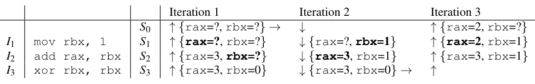
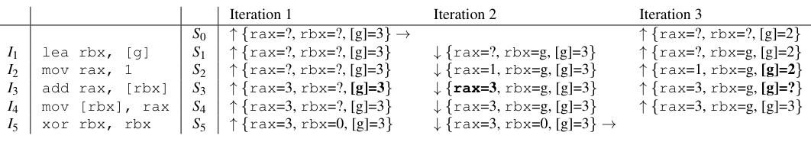
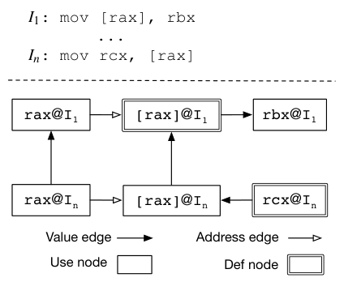
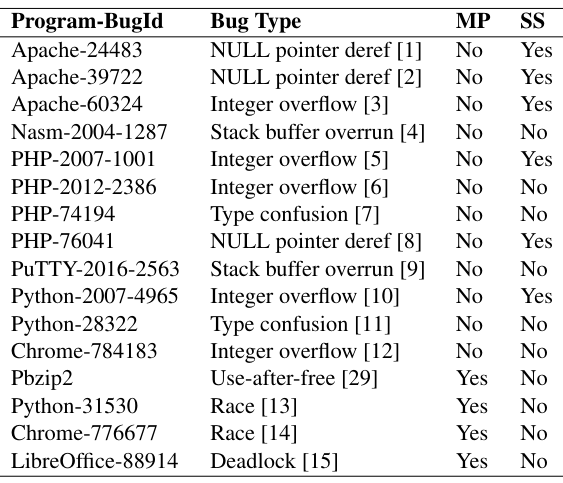
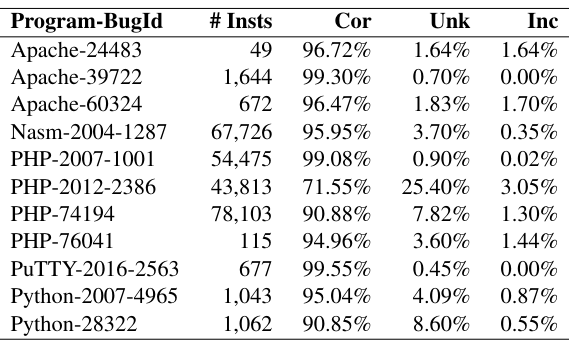
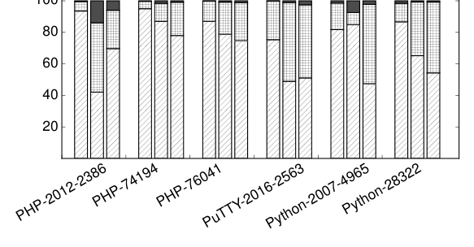
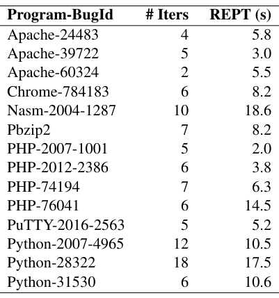

REPT: Reverse Debugging of Failures in Deployed Software
This page was written by an AI model to give a high-level overview of the paper. Please check the paper for detail: USENIX.
Software failures in deployed systems matter because they hit real users, but developers debugging them have almost nothing to go on. Vendors capture only a memory dump at the moment of a crash; the execution history that led there is gone, because always-on tracing or logging is too expensive to run on every deployed machine. Without that history, a significant fraction of reported bugs are never fixed, and those that are can take weeks.
The obvious fix, record more, runs into the same wall from two directions. Automatic root-cause diagnosis tools either need source changes, do not scale to complex software, or only cover narrow bug classes, so none of them are deployed in practice. Full record/replay reverse debugging is accurate, but existing systems add up to 200% overhead on multithreaded programs running across cores, which rules them out for always-on use. Even the most advanced bug-triage tool actually running in production, RETracer, handles only one class of failures (access violations) and recovers data coarsely.
REPT's idea is to split the job: record cheaply online, reconstruct expensively offline. Online, it uses Intel Processor Trace (PT), a CPU feature that logs a program's control flow and timestamps into a small per-thread circular buffer at under 2% overhead. When the program fails, that trace and the ordinary memory dump are saved together. Offline, a new binary analysis walks the logged instruction sequence backward and forward from the crash, using instruction semantics and the final memory-dump values to recover the register and memory values that held earlier in the execution, so a developer can step through recent history as if it had been fully recorded.
Mechanically, REPT alternates backward analysis (inverting instructions whose effects are reversible) and forward analysis (re-deriving values that an irreversible instruction destroyed, such as xor rax,rax, from other values that are still known) until no state changes. Two problems complicate this: memory writes to addresses REPT cannot yet determine, handled by an error-correction scheme built on a data inference graph that tracks how each value was inferred and lets REPT invalidate a value, and everything derived from it, if a later conflict shows it was wrong; and concurrent accesses from other threads, ordered where possible using Intel PT's fine-grained timestamps, and otherwise excluded from cross-instruction inference so an unresolved ordering cannot corrupt the recovered values.
On 16 real-world bugs in software including Chrome, Apache, PHP, and Python, REPT recovers register values with 92% average accuracy and finishes its offline analysis in under 20 seconds per bug. Its reverse debugging is effective, meaning it correctly recovers the values involved in the bug fix, for 14 of the 16 bugs, including 2 concurrency bugs. REPT ships as a Windows kernel driver plus a 100K-line WinDbg analysis library, integrated into Windows Error Reporting and deployed across hundreds of millions of machines.

Key takeaways
- Deployed-system failures ship with only a memory dump; full tracing or record/replay is too costly to run everywhere, so the execution history is normally lost.
- REPT pairs cheap online hardware control-flow tracing (Intel PT, under 2% overhead) with offline binary analysis that reconstructs data values from the final dump.
- Core mechanism: iterative forward/backward instruction emulation with error correction via a data inference graph, which handles irreversible instructions and memory writes to unknown addresses without expensive alias hypothesis testing.
- Concurrency is handled by ordering accesses with hardware timestamps where possible, and discounting values whose cross-thread order cannot be determined.
- Evaluated on 16 real bugs: 92% average register-recovery accuracy, under 20 seconds offline analysis, effective reverse debugging for 14 of 16, and real deployment in Windows Error Reporting and WinDbg.
From a memory dump to a reconstructed execution history
Why a dump alone is not enough, the design choices behind REPT, how it handles irreversible instructions and unknown memory writes, how it orders concurrent threads, and how it is implemented and deployed.
1 · Why only a memory dump survives a production crash
When a deployed program fails, there is usually no execution log, only a final memory dump: the register values and memory contents at the moment of the crash. Always-on tracing or full logging would help developers debug, but nobody wants to pay that overhead on every machine when most of the data would be discarded for normal runs. Hardware features such as Intel PT and ARM Embedded Trace Macrocell can log control flow and timing cheaply, but there is no equivalent hardware support for logging every data value a program touches. REPT is built around that asymmetry: trace control flow in hardware, recover data values in software afterward.
2 · Three design choices
- Memory dump only, not online data capture. Logging more during execution would need OS or program modification (no hardware support exists for it) and would raise runtime overhead, both against REPT's goal of being deployable everywhere.
- Binary-level analysis, not source-level. Working at the instruction level makes REPT language- and compiler-agnostic, works when not all source is available (common with multi-vendor binaries), and avoids the nontrivial problem of mapping optimized binary code back to source.
- Concrete execution, not symbolic execution. Symbolic execution could in principle reconstruct values via constraint solving, but the constraints grow too large to solve for long traces, especially once memory locations are made symbolic. REPT instead tracks concrete register and memory values, some known and some unknown, and analyzes each instruction to recover unknowns.
3 · The three challenges
Recovering data values from a control-flow trace and a final state faces three obstacles, addressed in the next three sections: irreversible instructions that destroy information, memory writes whose destination address cannot be determined, and concurrent memory accesses from multiple threads whose relative order is ambiguous.
4 · Instruction reversal and iterative analysis (irreversible instructions)
The paper defines an instruction sequence I = {Ii} and a program state Si as the collection of register and memory values after instruction Ii executes, with Sn the state in the memory dump. An instruction is reversible if, given a complete Si, Si-1 can be fully recovered. If every instruction were reversible, REPT could simply invert each one, backward from the dump to the start.
Most instructions are not reversible: xor rbx,rbx destroys whatever value rbx held. The key idea is to recover such a destroyed value through forward inference instead, as long as it is later derived from other registers or memory whose values are known. REPT iterates: mark all register values before the dump's position as unknown, run a backward pass recovering what it can, run a forward pass recovering what it can from that, and repeat until a fixed point, where no pass changes any state. Because a step only ever turns an unknown into a correctly inferred value (never overwrites a known value), the process cannot introduce conflicts and is guaranteed to converge, in this memory-free setting.
5 · Recovering memory writes to unknown addresses
Once memory accesses enter the picture, a memory write whose destination address is unknown becomes a problem: marking all memory as unknown after such a write is too conservative and destroys information that is actually recoverable, but silently ignoring the write risks leaving a stale value that later poisons other inferences.
REPT's answer is error correction: keep using possibly-valid memory values to infer other values, and correct them later if a conflict shows they were wrong. To track this, REPT builds a data inference graph while it analyzes. Each node is a register or memory location accessed by some instruction, split into a use node (read) and a def node (write) if both occur. Two kinds of directed edges connect nodes: a value edge from A to B means A's value was used to infer B's value; an address edge from A to B means A's value was used to compute B's address. Value edges are further split into horizontal edges, between nodes of the same instruction (for example, both operands of add rax,rbx), and vertical edges, between nodes for the same register or memory location across different instructions along a def-use chain.


Every node also gets a dereference level: 0 for values taken directly from the memory dump, and otherwise the larger of (a) the maximum level among nodes reached by an incoming value edge, or (b) one plus the maximum level among nodes reached by an incoming address edge. This counts the longest chain of address computations between a dump value and the node, and serves as a confidence score, since inference errors come from memory writes whose destination was initially unknown.
REPT detects two kinds of inconsistency during analysis: a value conflict, where a newly inferred value does not match an existing one, and an edge conflict, where a newly discovered write breaks a previously assumed def-use relationship on a vertical edge. On a value conflict, REPT keeps whichever value has the lower (more confident) dereference level and discards the other; on an edge conflict, or when the new value wins, REPT runs an invalidation process that marks the conflicting node and recursively propagates invalidation along its outgoing value and address edges. To guarantee the iterative analysis terminates, every invalidated value is added to a per-node blacklist so it cannot be reintroduced; this can occasionally blacklist a value that was actually correct, a deliberate trade of some recoverable data for guaranteed convergence.
6 · Handling concurrent threads
With multiple instruction sequences executing simultaneously across cores, REPT uses two insights: the hardware's timestamps can establish a partial order between instructions in different threads, and only the relative order of memory writes (not all instructions) actually affects data recovery.
- REPT splits each thread's trace into subsequences delimited by logged timestamps. If one subsequence's end time precedes another's start time, their order is known; otherwise they are concurrent.
- REPT merges all threads' subsequences into one conceptual instruction sequence, inserting concurrent subsequences in an arbitrary relative order.
- The arbitrary order only matters if two concurrent subsequences write the same memory location. For a memory access with a concurrent write to the same address, REPT removes its vertical (cross-instruction) edges, invalidates anything already inferred through them, and marks the node so it is never used across instructions again, while still allowing horizontal (same-instruction) inference.
7 · Implementation and deployment
- Online tracing: an 8.5K-line C Windows driver controls Intel PT in per-thread circular buffer mode over a configurable buffer size and timestamp granularity. The Windows kernel is modified to swap per-thread trace buffers on context switch. On a traced process's failure, its final state and PT trace are saved together in one memory dump.
- Offline analysis: a 100K-line C++ library, integrated into WinDbg, parses the PT trace into control flow (which requires the dumped binary code to match what executed), converts instructions to an intermediate representation, and runs the iterative forward/backward analysis to convergence. It also uses control dependencies, for example inferring a register's value from the fact that a conditional branch on it was taken, and implements data and code breakpoints for reverse debugging.
- System calls are handled conservatively: all volatile registers are marked unknown per the calling convention, and the kernel's own memory writes during a syscall are not modeled, instead treated like any other missing memory write and left to error correction.
- Deployment: Windows Error Reporting (WER) is extended so developers can request PT-enriched dumps; WER selects user machines to trace the targeted program, captures a dump with trace on failure, and sends it back so the developer can load it in WinDbg for reverse debugging.
Results from applying this pipeline to 16 real bugs are covered in the Evaluation tab.
Evaluation
What the paper measures, its key figures and tables as they appear in the paper, and what each one tells us.
The authors reproduce 16 real-world bugs in open-source software on Windows (open source for independent reproducibility; Windows because REPT is built for that ecosystem). Ground truth for accuracy comes from Time Travel Debugging (TTD), a slow but precise record/replay tool, with TTD extended to emit timing information approximating Intel PT's. Intel PT is configured with a 256KB per-thread circular buffer and the finest-grained timestamp mode.
| What | As stated in the paper |
|---|---|
| Platform (offline analysis) | x86-64 Windows 10, Intel Core i7-7700K 4.2 GHz quad-core, 16 GB RAM |
| Workloads | 16 real bugs in Apache, Nasm, PHP, PuTTY, Python, Chrome, Pbzip2, LibreOffice; 6 bug types (NULL pointer dereference, integer overflow, buffer overrun, type confusion, use-after-free, race, deadlock); 12 single-threaded, 4 concurrency bugs |
| Accuracy baseline | Time Travel Debugging (TTD), extended to emulate Intel PT timestamps for multithreaded cases |
| Speed baseline | POMP, a prior hypothesis-testing-based tool, compared on 3 shared bugs |
| Metrics | Percent of register uses correct / unknown / incorrect; number of analysis iterations; offline analysis wall-clock time; whether reverse debugging recovers the values involved in the bug fix |
The bug set spans diverse software and bug types, including concurrency

What it shows. Table 1 lists all 16 bugs by program and bug ID, its bug type, whether the defect and failure threads differ (MP), and whether the defect is on the same stack as the failure (SS). Twelve bugs are single-threaded, spanning NULL pointer dereference, integer overflow, type confusion, and stack buffer overrun. Four are concurrency bugs with MP = Yes: a use-after-free in Pbzip2, races in Python-31530 and Chrome-776677, and a deadlock in LibreOffice-88914.
What to take from it. The set is deliberately heterogeneous in both bug class and in whether the defect and the eventual failure are on the same thread and stack, which is what stresses REPT's single-thread analysis, its memory-write error correction, and its concurrency handling across separate experiments.
Single-thread register recovery is accurate, 92% on average, with allocator bookkeeping as the hard case

What it shows. Table 2 reports correct / unknown / incorrect percentages of recovered register uses for 11 single-threaded bugs, over instruction sequences from the defect to the failure ranging from 49 to 115,103 instructions. Most bugs recover above 90% correct, for example Apache-39722 at 99.30% over 1,644 instructions and PHP-2007-1001 at 99.08% over 54,475 instructions. The outlier is PHP-2012-2386 at 71.55% correct, 25.40% unknown, over 43,813 instructions, attributed to a large number of memory-allocation operations just before the crash whose metadata (chunk sizes) gets overwritten by reallocation and so is hard to reverse. Incorrect rates stay low throughout, from 0% to 3.05%. On the two concurrency bugs where TTD-derived timing could be used, Pbzip2 scores 95.33% / 4.36% / 0.31% over 12,496 instructions, and Python-31530 scores 75.72% / 24.14% / 0.14% over 511,289 instructions, the lower figure attributed to the much larger number of instructions between defect and failure. Averaged across all 16 bugs the paper reports 92% accuracy.
What to take from it. Incorrect values stay rare even where accuracy drops, because the error-correction design is built to prefer marking a value unknown over committing to a wrong one. Accuracy tracks how reversible the surrounding code is (allocator bookkeeping is the hardest case seen) and how many instructions separate the defect from the failure, rather than single- versus multi-threaded execution per se.
Accuracy degrades with trace length, but the rate is workload-dependent

What it shows. Figure 4 plots correct / unknown / incorrect percentages for 6 bugs at instruction-sequence sizes of 10K, 100K, and 1M instructions back from the failure (REPT limited to analyzing 1M instructions). Overall accuracy decreases as the window grows, but not monotonically: PHP-2012-2386 dips specifically at the 100K-instruction window because that stretch contains a concentration of the hard-to-reverse memory-allocation operations described in Result 2.
What to take from it. How far back REPT can usefully reach depends on what the program was doing in that stretch of execution, not just on elapsed instruction count. Separately, the paper's text notes that for Python-31530, correct-register accuracy stays above 80% out to 162,208 instructions, well beyond the shorter sequences in Table 2 (this figure uses only 6 of the 16 bugs; the others have shorter execution histories).
Offline analysis finishes in under 20 seconds, 1 to 3 orders of magnitude faster than prior work

What it shows. Table 3 reports, for the 14 bugs REPT successfully analyzes, the number of backward/forward iterations to reach convergence (2 to 18) and the wall-clock offline analysis time, from 2.0 seconds (PHP-2007-1001) to 18.6 seconds (Nasm-2004-1287). On the 3 bugs shared with the prior tool POMP (Nasm-2004-1287, PuTTY-2016-2563, Python-2007-4965), the paper reports REPT is 1 to 3 orders of magnitude faster, for example 5.2 seconds versus 30 minutes for PuTTY-2016-2563.
What to take from it. The data-inference-graph error-correction design keeps analysis cost growing linearly with trace size, in contrast to POMP's recursive hypothesis testing, whose cost the paper states grows exponentially with trace size. The comparison is on speed only; POMP's accuracy is not reported in its own paper, so the two tools cannot be compared on accuracy. Online tracing overhead is reported separately (from a related paper on lazy diagnosis) as under 2% with circular buffers and timing information enabled.
FAQ
Q·What does REPT stand for?▾
Reverse Execution with Processor Trace. The paper notes it is meant to be read as "repeat."
Q·How is this different from record/replay debugging tools like rr or Time Travel Debugging?▾
Record/replay logs enough information to deterministically reproduce an execution exactly, which is accurate but can add up to 200% overhead on multithreaded programs. REPT logs only control flow and timestamps (via Intel PT, under 2% overhead) and reconstructs the missing data values afterward with binary analysis, trading some accuracy and offline computation time for overhead low enough to run broadly in deployed systems.
Q·Why not just log data values online too, to make recovery exact?▾
There is no existing hardware support for efficiently logging arbitrary data values during execution, and doing it in software would require modifying the OS or the program, which conflicts with REPT's goal of being unintrusive and broadly deployable. The paper leaves this as future work, pointing to Intel's PTWRITE instruction as a possible way to log select data cheaply.
Q·What exactly does Intel Processor Trace record?▾
Control flow (which branches were taken, reconstructing the executed instruction sequence) and timing information (timestamps at configurable granularity), not data values. REPT uses it in per-thread circular buffer mode so only recent history before a crash is kept.
Q·How can REPT recover a value an instruction destroyed, like after xor rax,rax?▾
Not by inverting that instruction, which is impossible once the value is gone. REPT infers it in a later forward pass, from some other register or memory location that still holds information derived from it, iterating backward and forward analysis until nothing more changes.
Q·What happens when REPT does not know the address of a memory write?▾
It does not assume the worst (marking all memory unknown) or ignore the write. It optimistically keeps using other values that may depend on memory state, and tracks how each value was derived in a data inference graph with a confidence score (dereference level). If a later contradiction shows an assumption was wrong, REPT invalidates that value and everything inferred from it.
Q·How does REPT know the right order of instructions on different cores?▾
From Intel PT's fine-grained timestamps, which let REPT build a partial order between instruction subsequences from different threads. When the timestamps cannot resolve the order between two concurrent subsequences, REPT does not guess; instead it avoids using the ambiguous memory accesses to infer values across instructions.
Q·Could an unresolved thread ordering still produce a wrong value?▾
Only in the specific case where two separate concurrent writes each affect the inference of the other's destination address. The paper calls this rare in practice given the timestamp granularity modern hardware provides, and supports that with a stress test (Racey) on an extreme, deliberately high-contention benchmark.
Q·Does REPT require recompiling, instrumenting, or modifying the source of the target program?▾
No. It operates entirely at the binary level on an unmodified program, using only the control-flow trace and the memory dump captured at failure.
Q·Why is REPT's offline analysis so much faster than the prior tool POMP?▾
POMP resolves ambiguous memory writes by recursively testing aliasing hypotheses, whose cost grows exponentially with trace length. REPT's data-inference-graph error correction instead grows linearly, which the paper shows is 1 to 3 orders of magnitude faster on the bugs the two tools share.
Q·What kinds of bugs or traces can REPT not handle?▾
Two failure modes in the paper's own bug set: in-place modification of jitted code breaks Intel PT trace parsing (Chrome-776677), and an infinite loop before a crash can fill the circular trace buffer, erasing the execution history before the actual defect (LibreOffice-88914).
Q·Is REPT actually used in production, or just a research prototype?▾
It is deployed: a Windows kernel driver plus a WinDbg analysis plugin, integrated into Windows Error Reporting across hundreds of millions of machines. The paper describes a case where it helped fix a Microsoft Edge bug that had gone unresolved for almost two years because it could not be reproduced locally.
Q·Can REPT reverse-debug kernel-mode crashes?▾
Not currently; the implementation targets user-mode execution. At system calls, REPT marks volatile registers unknown and treats the kernel's own memory writes like any other missing write, relying on error correction rather than modeling kernel semantics. Reverse debugging of kernel-mode code is left to future work.